Roadmap explanary notes
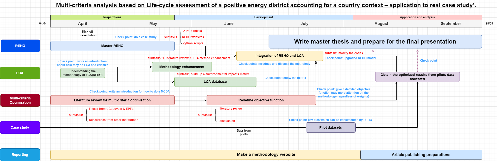
Generally the internship project is divided into 5 sections after having basic understanding of the FEDECOM proposal and InterPED project.
The key output expected from this internship is to get a LCA integrated REHO model which can do multi-cretiaria analysis based on real cases.
Each small square in the background represents one day and it begins from 04/04/2024 to 25/09/2024. There are mainly 3 processes: preparations, development, and applications
Preparations
Around one month and a half is put for the preparations (beginning of April - mid of May)
REHO (Master REHO)
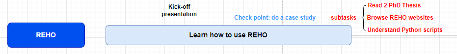
The first thing to do is to fully understand REHO. Here are subtasks to achieve this milestone:
Subtasks
Finish the reading of Starter pack REHO, inside there are 2 PhD thesis and some other reports;
Finish understanding the codes: What’s the model’s input? What’s the model’s output? How are the ampl optimization models? What are the constraints? What are the objectives?
Finish browsing the REHO website’s content.
Checkpoint
This work will be examined by conducting a case study with REHO. The case should be completely new.
LCA (Understanding the methodology of LCA(REHO))
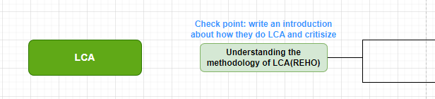
Based on the “Master REHO” section, while browsing the materials and codes, the methodology that how the LCA is did should also be figured out.
Additionally, in case of that their LCA is too basic, it should be critisized or judged –> develop a brand new LCA or improve based on exsiting LCA model they have?
Checkpoint
The output which is to be supervised is an introduction of their methodology which will be written in text.
Multi-criteria optimization (Literature review for multi-criteria optimization)
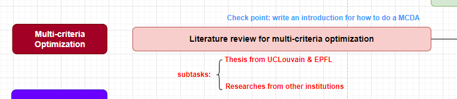
subtasks
- Thesis from UCLouvain and EPFL should be read in detail, especially:
- Multi-criteria optimisation of an energy system and application to the Belgian case
- EnergyScope Pathway: An open-source model to optimise the energy transition pathways of a regional whole-energy system
- EnergyScope TD: A novel open-source model for regional energy systems (What is the difference between the pathway and TD)
These articles are collected during the time before my interview to write down my understanding of the PhD project, which should be read more deeply.
- Articles by other institutions should also be read
Checkpoint
The expected output of this process is to have a detailed introduction written for how to do LCA.
Development
LCA (Methodology enhancement + LCA database)
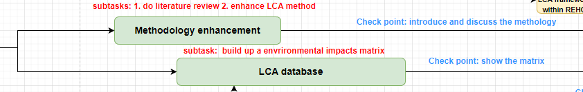
Subtasks
LCA literature review about how to do LCA for positive energy district.
LCA method enhancement.
LCA database - build u a environmental impacts matrix: which environmental impacts are chosen for evaluating, etc.
Checkpoints
introduce(write) and discuss about the methodology
show the matrix in csv or in other appropriate ways.
MSCD (redefine objective function)
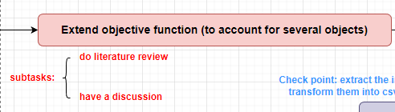
do the literature reviews and discuss and develop a brand new objective function which involves all other environmental impacts indicators.
Integration of REHO and LCA
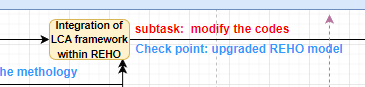
A upgraded model is expected.
Case study
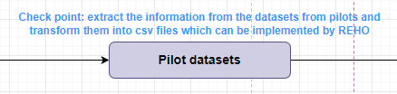
Get the datas from pilots by the end of June and then transform them into an implemented csv format which could be run by REHO.
Applications and analysis
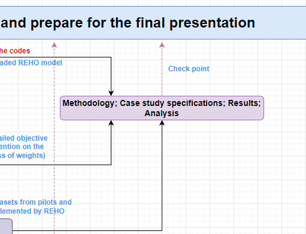
For the applications and analysis, the transformed pilots’ datasets will be treated as input and a multi-criteria analysis will be conducted.
Reporting
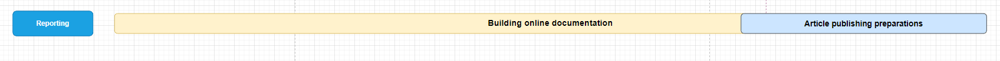
It exsits through the whole internship period and the design for the methodology website will be based on github page.
The opportunity for publications is to be discussed.
Master thesis writing as well as presentation preparations will begin after the beginning of July.
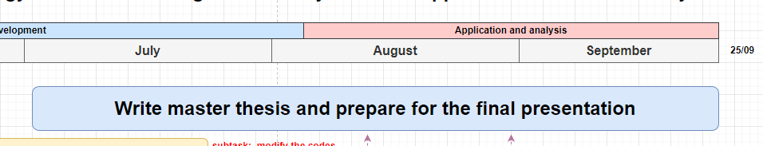